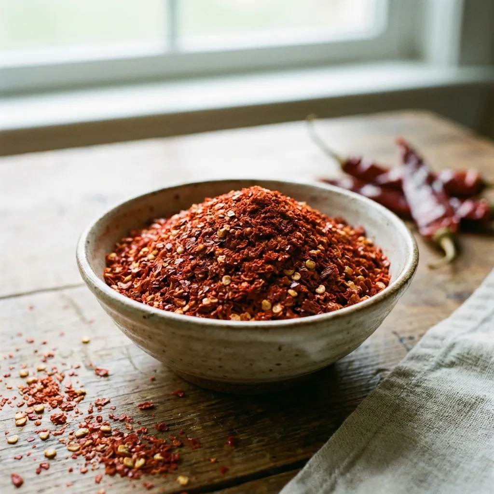
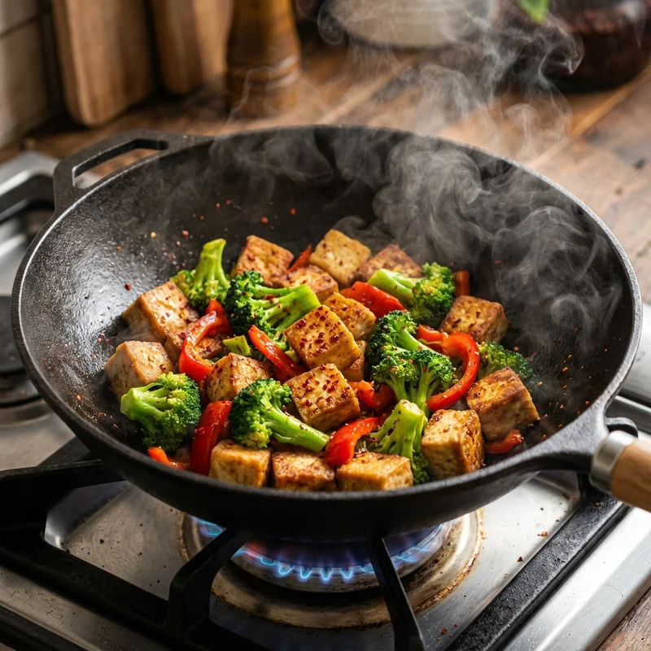
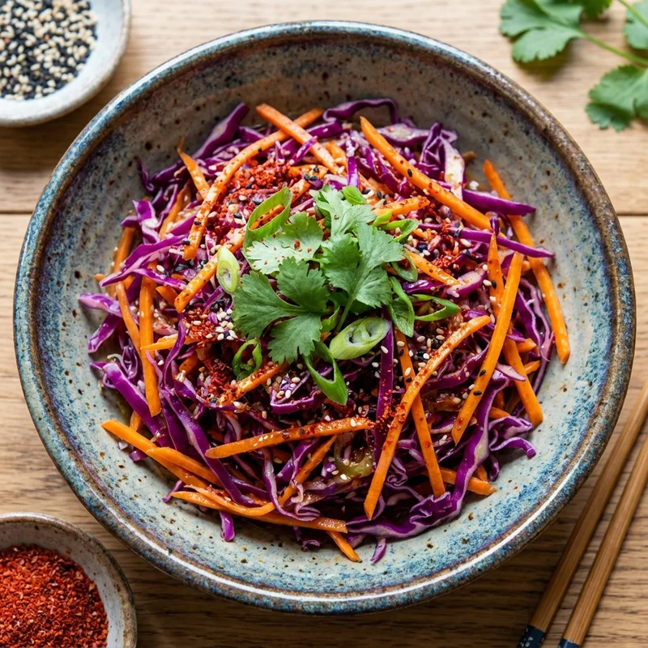
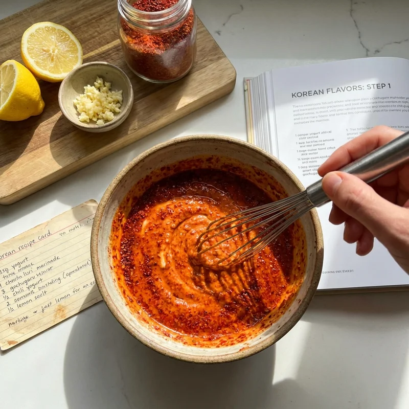

Recetas Saludables con Gochugaru: El Chile Coreano que Revoluciona tu Cocina
El gochugaru es un chile coreano en copos que ha conquistado las cocinas saludables de todo el mundo. Este condimento vibrante y aromático no solo añade un toque picante único a tus platos, sino que también aporta beneficios para el metabolismo y está cargado de vitaminas. Descubre cómo incorporar el gochugaru en recetas nutritivas y deliciosas que transformarán tu manera de cocinar.
¿Qué es el Gochugaru?
El gochugaru es un tipo de chile rojo coreano deshidratado y molido en copos de textura gruesa. A diferencia de otros chiles picantes, el gochugaru tiene un sabor complejo que combina dulzura natural, picante moderado y un toque ahumado distintivo. Se utiliza como ingrediente esencial en platos coreanos tradicionales como el kimchi, pero su versatilidad lo hace perfecto para todo tipo de recetas saludables modernas.
Beneficios Nutricionales del Gochugaru
Además de su sabor excepcional, el gochugaru ofrece numerosos beneficios para la salud:
- Rico en vitamina C: Fortalece el sistema inmunológico y actúa como antioxidante
- Alto contenido en capsaicina: Acelera el metabolismo y ayuda en la quema de calorías (termogénesis)
- Propiedades antioxidantes: Combate el daño celular y el envejecimiento prematuro
- Mejora la circulación: Promueve la salud cardiovascular y reduce inflamación
- Antiinflamatorio natural: Reduce la inflamación sistémica en el cuerpo [1]
- Vitamina A: Importante para la salud ocular y la piel

Receta 1: Tofu Salteado con Gochugaru y Vegetales Crujientes

Esta receta combina la proteína vegetal del tofu con la potencia metabólica del gochugaru, creando un plato completo, nutritivo y lleno de sabor. Perfecto para almuerzos saludables que te mantienen satisfecho durante horas.
⏱️ Tiempo: Preparación 15 min | Cocción 15 min | Total 30 min
🍽️ Porciones: 4 personas
💪 Calorías: 220 kcal por porción | Proteína 15g | Carbohidratos 18g | Grasas
saludables 10g
Ingredientes:
- 400g de tofu firme (extra firme si es posible)
- 2-3 cucharadas de gochugaru (ajusta según tu tolerancia al picante)
- 3 tazas de brócoli fresco cortado en floretes pequeños
- 1 pimiento rojo grande en tiras finas
- 1 pimiento amarillo (opcional, añade color)
- 3 dientes de ajo fresco picados finamente
- 1 trozo de jengibre fresco rallado (2cm aproximadamente)
- 3 cucharadas de salsa de soja baja en sodio (o tamari sin gluten)
- 2 cucharadas de aceite de sésamo tostado
- 1 cucharada de aceite de coco o aceite neutro para cocinar
- 2 cucharadas de semillas de sésamo tostadas para decorar
- 2 cebollines frescos en rodajas (opcional)
- Sal marina al gusto
Preparación Paso a Paso:
Paso 1 - Preparar el Tofu: Retira el tofu del paquete y envuélvelo en papel de cocina absorbente o un paño limpio. Coloca algo pesado encima (como un libro o una sartén) y deja reposar 10 minutos para extraer el exceso de humedad. Esto es crucial para lograr una textura dorada y crujiente. Una vez prensado, córtalo en cubos medianos de aproximadamente 2cm por lado. La uniformidad asegura cocción pareja.
Paso 2 - Preparar los Vegetales: Mientras el tofu reposa, lava y corta el brócoli en floretes pequeños de tamaño similar. Si los tallos son tiernos, pélalos y córtalos en rodajas - ¡no desperdicies nada! Corta los pimientos en tiras finas y uniformes. Pica finamente el ajo y ralla el jengibre. Tener todo preparado (mise en place) hace que el salteado sea rápido y sin estrés.
Paso 3 - Dorar el Tofu: Calienta un wok grande o sartén antiadherente a fuego medio-alto. Añade el aceite de coco y espera a que se derrita y brille (aproximadamente 30 segundos). Coloca los cubos de tofu en una sola capa, dejando espacio entre ellos - no te apresures a moverlos. Este es el secreto para una costra dorada perfecta. Deja cocinar sin tocar durante 4-5 minutos hasta que la base esté dorada y crujiente. Voltea cada cubo cuidadosamente y dora el otro lado por 3-4 minutos más. Retira el tofu dorado a un plato y reserva.
Paso 4 - Saltear los Vegetales: En la misma sartén (aprovechando los sabores del tofu), añade 1 cucharada de aceite de sésamo. Incorpora primero el brócoli ya que requiere más cocción. Saltea durante 3 minutos, removiendo ocasionalmente. Luego añade los pimientos, ajo y jengibre. Continúa salteando por 3-4 minutos más. Los vegetales deben estar tiernos pero conservar su textura cruj iente (al dente). Si se secan demasiado, añade 2 cucharadas de agua.
Paso 5 - Incorporar el Gochugaru: Reduce el fuego a medio. Espolvorea el gochugaru sobre los vegetales salteados. Mezcla bien durante 30-60 segundos, permitiendo que el calor libere los aceites esenciales del chile y despierte sus aromas. El gochugaru debe cubrir uniformemente todos los vegetales, creando ese característico color rojo vibrante.
Paso 6 - Combinar y Saborizar: Devuelve el tofu dorado a la sartén. Añade la salsa de soja y la cucharada restante de aceite de sésamo. Con movimientos envolventes suaves (no revuelvas bruscamente o el tofu se romperá), mezcla todo durante 2-3 minutos hasta que los sabores se integren y todo esté bien caliente. Prueba y ajusta la sal si es necesario.
Paso 7 - Emplatado y Servicio: Sirve inmediatamente en platos o bols precalentados. Decora generosamente con semillas de sésamo tostadas y cebollines frescos en rodajas. El contraste de texturas - tofu crujiente por fuera y suave por dentro, vegetales al dente - es lo que hace este plato especial.
💡 Tips y Variaciones:
- Para más proteína: Añade edamame o cacahuates tostados
- Versión más picante: Agrega 1 cucharadita de pasta gochujang además del gochugaru
- Carbohidratos completos: Sirve sobre arroz integral, quinoa o fideos de arroz
- Extra crujiente: Enharina ligeramente el tofu con maicena antes de dorar
- Más vegetales: Añade champiñones shiitake, pak choi o espárragos
🥗 Información Nutricional Destacada:
Esta receta es una excelente fuente de proteína vegetal completa (15g por porción), ideal para vegetarianos y veganos. El tofu aporta los 9 aminoácidos esenciales, mientras que el brócoli proporciona vitamina K, ácido fólico y fibra. El gochugaru añade capsaicina, que puede aumentar el gasto calórico hasta en un 8% durante las horas posteriores a la comida. Con solo 220 calorías por porción generosa, es perfecto para quienes buscan alternativas saludables a productos procesados altos en grasas trans y sodio.
Receta 2: Ensalada Asiática de Col con Aderezo Picante de Gochugaru

Una ensalada refrescante y vibrante que combina texturas crujientes con un aderezo agridulce-picante irresistible. Perfecta como acompañamiento o plato principal ligero.
⏱️ Tiempo: Preparación 10 min | Marinado 15 min | Total 25 min
🍽️ Porciones: 6 personas
💪 Calorías: 65 kcal por porción | Proteína 2g | Carbohidratos 12g | Fibra 3g
Ingredientes:
- 1/2 col morada mediana (aproximadamente 500g) finamente rallada
- 1/2 col verde o repollo blanco rallado (añade contraste de color)
- 2 zanahorias medianas peladas y cortadas en juliana fina
- 1-2 cucharaditas de gochugaru (al gusto)
- 3 cucharadas de vinagre de arroz sin azúcar añadida
- 2 cucharadas de miel cruda o sirope de agave
- 1 cucharada de aceite de sésamo tostado
- 1 cucharada de jugo de lima fresco
- 1 cucharadita de jengibre fresco rallado
- 1/2 cucharadita de sal marina
- 2 cucharadas de cilantro fresco picado (opcional)
- 1 cucharada de semillas de sésamo negro y blanco mezcladas
- 1/4 taza de cacahuates tostados picados (opcional, para más proteína)
Preparación Paso a Paso:
Paso 1 - Preparar las Coles: Retira las hojas exteriores de las coles si están dañadas. Corta cada col por la mitad y retira el corazón duro. Usando un cuchillo afilado o una mandolina (con mucho cuidado), ralla finamente ambas coles en tiras delgadas de aproximadamente 2-3mm. Las tiras finas permiten mejor absorción del aderezo y una textura más agradable. Coloca en un bol grande con capacidad para mezclar.
Paso 2 - Preparar las Zanahorias: Pela las zanahorias y córtalas en juliana fina (palitos delgados). Puedes usar un pelador de juliana, un rayador especial o simplemente cortarlas a mano con paciencia. La clave es mantener un grosor uniforme para que la textura sea consistente. Añade al bol con las coles.
Paso 3 - Crear el Aderezo Mágico: En un bol pequeño o frasco con tapa, combina el vinagre de arroz, miel, aceite de sésamo, jugo de lima fresco, jengibre rallado, gochugaru y sal. Si usas frasco, cierra bien y agita vigorosamente durante 30 segundos hasta que la miel se disuelva completamente y el aderezo este emulsionado. Si usas bol, bate enérgicamente con un tenedor o batidor pequeño. El aderezo debe tener un equilibrio perfecto entre dulce, ácido, picante y salado.
Paso 4 - Masajear la Ensalada: Vierte el aderezo sobre los vegetales rallados. Aquí viene el paso secreto: usando tus manos limpias (o guantes desechables si prefieres), masajea literalmente la ensalada durante 2-3 minutos. Este proceso rompe ligeramente las fibras de la col, haciéndola más tierna y digestible, mientras asegura que cada hebra esté perfectamente cubierta con el aderezo. La col comenzará a reducir su volumen y liberar algo de líquido - ¡esto es perfecto!
Paso 5 - Marinar para Intensificar Sabores: Cubre el bol con film transparente o tapa y refrigera durante mínimo 15 minutos. Para resultados óptimos, marina entre 30 minutos y 2 horas. Durante este tiempo, los sabores se mezclan y profundizan, la col se ablande ligeramente mientras mantiene su crujido característico, y los colores vibrantes se intensifican. Mezcla ocasionalmente si marinas por más tiempo.
Paso 6 - Finalizar y Decorar: Antes de servir, mezcla bien nuevamente. Si la ensalada liberó mucho líquido, puedes escurrir ligeramente (reserva el líquido como aderezo adicional). Incorpora el cilantro fresco picado si lo usas. Transfiere a una fuente de servicio bonita.
Paso 7 - Servicio con Estilo: Decora la superficie con semillas de sésamo mezcladas y, si deseas añadir proteína y textura, espolvorea cacahuates tostados picados por encima. Sirve frío como acompañamiento perfecto para proteínas a la parrilla, dentro de wraps saludables, o sobre una cama de arroz integral como plato principal ligero.
💡 Tips y Variaciones:
- Ensalada cremosa: Añade 2 cucharadas de mantequilla de cacahuate al aderezo para versión tipo "coleslaw asiático"
- Más vegetales: Incorpora pimiento rojo en juliana, edamame o mango en cubos
- Proteína adicional: Agrega pollo desmenuzado, tofu marinado o camarones para plato completo
- Menos picante: Reduce gochugaru a 1/2 cucharadita o reemplaza con pimentón ahumado
- Versión fermentada: Deja marinar 24 horas en refrigerador para efecto similar al kimchi
🥗 Beneficios Saludables:
Esta ensalada es un powerhouse nutricional con solo 65 calorías por porción generosa. La col morada es excepcionalmente rica en antocianinas, antioxidantes que combaten la inflamación y pueden reducir el riesgo de enfermedades crónicas. Con 3g de fibra por porción, promueve la saciedad y la salud digestiva. A diferencia de aderezos comerciales cargados de azúcares refinados y conservantes (algunos con hasta 15g de azúcar por porción), este aderezo casero utiliza miel natural en cantidad moderada. El gochugaru aporta vitamina C y capsaicina, compuestos que aceleran el metabolismo. Perfecta para quienes buscan alternativas saludables a ensaladas de col comerciales que pueden contener mayonesa y estar cargadas de calorías vacías.
Receta 3: Pollo al Horno con Costra Crujiente de Gochugaru
Una receta que transforma el pollo ordinario en una experiencia culinaria extraordinaria. La marinada de yogur crea pechugas jugosísimas mientras el gochugaru forma una costra aromática irresisti ble.
⏱️ Tiempo: Marinado 2-4 horas | Preparación 15 min | Cocción 30 min | Total 3
horas
🍽️ Porciones: 4 personas
💪 Calorías: 280 kcal por porción | Proteína 38g | Carbohidratos 8g | Grasas 9g
Ingredientes:
- 4 pechugas de pollo grandes sin piel (aproximadamente 800g total)
- 4 cucharadas de gochugaru (3 para marinada, 1 para costra adicional)
- 250g de yogur griego natural sin azúcar (2% o completo)
- 2 cucharadas de jengibre fresco rallado finamente
- Jugo y ralladura de 1 limón grande
- 4 dientes de ajo machacados hasta formar pasta
- 2 cucharaditas de pimentón ahumado
- 1 cucharadita de comino molido
- 1 cucharada de miel
- 2 cucharadas de aceite de oliva extra virgen
- 1 cucharadita de sal marina
- 1/2 cucharadita de pimienta negra recién molida
- Cilantro fresco y rodajas de limón para servir

Preparación Paso a Paso:
Paso 1 - Preparar las Pechugas: Lava las pechugas de pollo bajo agua fría y sécalas completamente con papel de cocina. Si las pechugas son muy gruesas o desiguales, colócalas entre dos hojas de film transparente y golpéalas suavemente con un mazo o sartén hasta lograr grosor uniforme de aproximadamente 2cm. Esto asegura cocción pareja y evita que unas partes queden secas mientras otras están crudas. Con un cuchillo afilado, haz 2-3 cortes superficiales diagonales en cada pechuga (no atravieses completamente). Estos permiten que la marinada penetre profundamente.
Paso 2 - Crear la Marinada Mágica: En un bol grande, combina el yogur griego, 3 cucharadas de gochugaru, jengibre rallado, pasta de ajo, jugo de limón fresco, ralladura de limón, pimentón ahumado, comino, miel, aceite de oliva, sal y pimienta negra. Mezcla vigorosamente con un batidor o tenedor hasta obtener una pasta homogénea de color rojo-naranja intenso. El yogur no solo marinará el pollo sino que actuará como ablandador natural gracias a sus ácidos lácticos, resultando en carne increíblemente jugosa.
Paso 3 - Marinar el Pollo: Coloca las pechugas preparadas en una bolsa ziplock grande de un galón o en un recipiente de vidrio con tapa. Vierte toda la marinada sobre el pollo, asegurando que cada pechuga esté completamente cubierta. Masajea suavemente la bolsa (o mezcla en el recipiente) para distribuir uniformemente. Elimina todo el aire posible de la bolsa antes de sellar. Refrigera durante mínimo 2 horas, idealmente 4 horas o incluso toda la noche. Voltea la bolsa cada hora si puedes para marinado uniforme.
Paso 4 - Preparar para Hornear: 30 minutos antes de cocinar, retira el pollo del refrigerador y déjalo alcanzar temperatura ambiente - esto asegura cocción uniforme. Mientras tanto, precalienta el horno a 200°C (horno convencional) o 180°C (horno de convección). Forra una bandeja para hornear con papel de aluminio y coloca una rejilla metálica encima (si tienes una). La rejilla permite circulación de aire alrededor del pollo, creando mejor costra. Si no tienes rejilla, simplemente usa la bandeja forrada.
Paso 5 - Hornear a la Perfección: Retira las pechugas de la marinada, dejando que el exceso escurra pero conservando una capa generosa adherida. Coloca en la rejilla o bandeja, dejando espacio entre ellas (no encimes). Espolvorea ligeramente con la cucharada restante de gochugaru para costra extra crujiente. Hornea durante 25-30 minutos. A media cocción (minuto 15), voltea cada pechuga para dorado uniforme. El pollo está perfectamente cocido cuando alcanza temperatura interna de 73-75°C medida con termómetro en la parte más gruesa (o cuando los jugos salen completamente claros al pinchar).
Paso 6 - Descanso Crucial: Este es el paso que muchos omiten pero que marca la diferencia entre pollo jugoso y pollo seco. Una vez cocido, transfiere las pechugas a una tabla de cortar o plato y cúbrelas ligeramente con papel aluminio. Deja reposar 5-7 minutos. Durante este tiempo, los jugos que se concentraron en el centro durante la cocción se redistribuyen uniformemente por toda la carne, resultando en cada bocado jugoso.
Paso 7 - Cortar y Servir: Usando un cuchillo bien afilado, corta cada pechuga diagonalmente en medallones de aproximadamente 1.5cm de grosor. Esto no solo se ve profesional sino que facilita porciones perfectas. Acomoda en platos o fuente, rocía con cualquier jugo acumulado en la tabla, decora con cilantro fresco y rodajas de limón. La costra de gochugaru debe estar dorada, aromática y ligeramente crujiente en los bordes.
💡 Tips y Variaciones:
- Para más jugosidad: Salmuera el pollo 1 hora antes en agua con sal (1L agua + 50g sal)
- Versión gluten-free: Asegúrate que tu gochugaru no contenga aditivos con gluten
- Nivel picante personalizable: Reduce gochugaru a 2 cucharadas para versión suave, aumenta a 5 para extra picante
- Sin lácteos: Sustituye yogur con leche de coco espesa + 1 cucharada de vinagre
- A la parrilla: Funciona perfectamente en parrilla a fuego medio-alto (8-10 min por lado)
- Meal prep: El pollo marinado crudo se congela perfectamente hasta 3 meses
🥗 Sugerencias de Servicio:
Sirve sobre una cama de arroz integral con cilantro y lima, acompaña con la ensalada de col con gochugaru de la receta 2, o corta en tiras para bowls saludables con quinoa y vegetales asados. También es perfecto sobre ensaladas verdes, en wraps de lechuga, o simplemente con vegetales al vapor y batata asada.
💪 Información Nutricional Destacada:
Con 38g de proteína magra por porción y solo 280 calorías, esta receta es ideal para quienes buscan desarrollar músculo, mantener un peso saludable o simplemente comer de manera más consciente. A diferencia del pollo frito tradicional que puede contener 500+ calorías y 25g de grasa por porción (la mayoría grasas saturadas y trans de la fritura), nuestra versión al horno reduce drásticamente las calorías mientras maximiza el sabor. El yogur griego aporta probióticos beneficiosos para la salud intestinal, mientras que el gochugaru añade capsaicina que, según estudios, puede aumentar la sensación de saciedad y el gasto energético post-comida.
Consejos Generales para Cocinar con Gochugaru
Para aprovechar al máximo este increíble ingrediente coreano, ten en cuenta estos tips profesionales.
El gochugaru se puede añadir directamente a marinadas, adobos, salsas, sopas y estofados. Su textura
en copos lo hace perfecto para espolvorear como toque final. Si buscas un picante más suave, reduce
la cantidad gradualmente - siempre puedes añadir más pero no quitar. Combina excepcionalmente bien
con ingredientes ácidos (limón, vinagre), dulces (miel, frutas), y umami (soja, miso).

Para crear salsas espesas y sedosas, mezcla gochugaru con fécula de maíz y caldo. También funciona maravillosamente en postres - prueba añadir una pizca a chocolates con almendras oscuro derretido para un contraste picante-dulce sofisticado.
Alternativa Saludable a Productos Procesados
El gochugaru representa una revolución en cómo pensamos sobre añadir sabor a nuestras comidas. En lugar depender de salsas comerciales picantes cargadas de azúcar (algunas contienen hasta 12g por porción), sodio excesivo (600mg+), conservantes artificiales, colorantes y estabilizantes, el gochugaru ofrece sabor puro, intenso y natural.
Una cucharada de gochugaru contiene solo 15 calorías, 0g de azúcar añadida, y está repleta de vitaminas y antioxidantes. Para platos que tradicionalmente requieren mucha sal para sabor, el gochugaru añade complejidad permitiendo reducir sodio en 30-50% sin sacrificar el gusto. Es la herramienta perfecta para transformar alimentos simples y saludables en experiencias culinarias memorables.
Almacenamiento y Conservación del Gochugaru
Para mantener la máxima frescura, potencia de sabor y propiedades del gochugaru, guárdalo en un recipiente hermético de vidrio oscuro o en su bolsa original bien sellada dentro de otro recipiente oscuro. Almacena en lugar fresco, seco y oscuro (despensa está perfecto, evita cerca de estufa).
Correctamente almacenado, el gochugaru mantiene su calidad durante 6-8 meses. Después de este tiempo, no se echa a perder pero pierde gradualmente intensidad de color y sabor. Para períodos más largos (hasta 18 meses), puedes refrigerarlo o incluso congelarlo en recipiente hermético - déjalo alcanzar temperatura ambiente antes de usar. Evita exposición a luz directa, calor o humedad excesiva que pueden degradar sus compuestos activos y causar pérdida prematura de aroma.
Referencias Científicas
- Mahoro P, et al. (2021). "Protective Effect of Gochujang on Inflammation in a DSS-Induced Colitis Rat Model". Foods, 10(5):1072. PubMed PMID: 34066160
💚 Encuentra Gochugaru Auténtico en Amazon
Transforma tu cocina con gochugaru auténtico de Corea. Busca marcas de calidad que especifiquen "Coarse (grueso)" para mejor textura. Disponible en Amazon España con envío rápido.
Ver Gochugaru en Amazon →